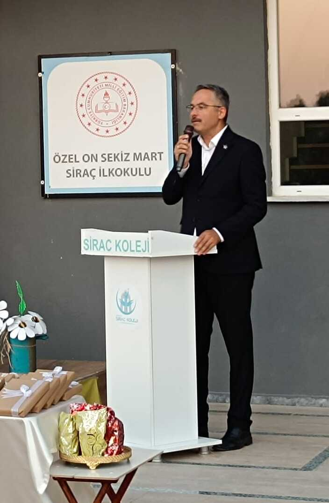

Kurucu kolejı
Mehmet Emin Bıçakcı
Okul Kurucusu
1982 yılında Aydın'ın Söke ilçesinde doğdu. İlk, orta ve lise öğrenimini Söke’de tamamladı. 2000 yılında askeri okuldan mezun olup Deniz Kuvvetleri Komutanlığında göreve başladı.
2013 yılında kendi isteği ile istifa ederek çeşitli STK’larda görev aldı. Anadolu Üniversitesi İşletme ve İlahiyat Ön lisans programlarını tamamladı. Halen İnönü Üniversitesi İlahiyat Fakültesi Lisans eğitimine devam etmektedir. Evli ve 4 çocuk babasıdır.
2016 yılından bu yana Özel Çanakkale Sıraç Okulları'nın kurucu temsilcisi olarak, milli ve manevi değerlere bağlı, sorumluluk sahibi nesiller yetiştirme misyonuyla hizmet vermektedir.